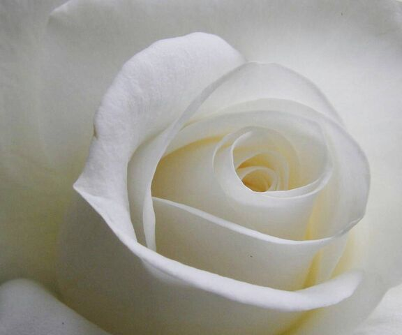
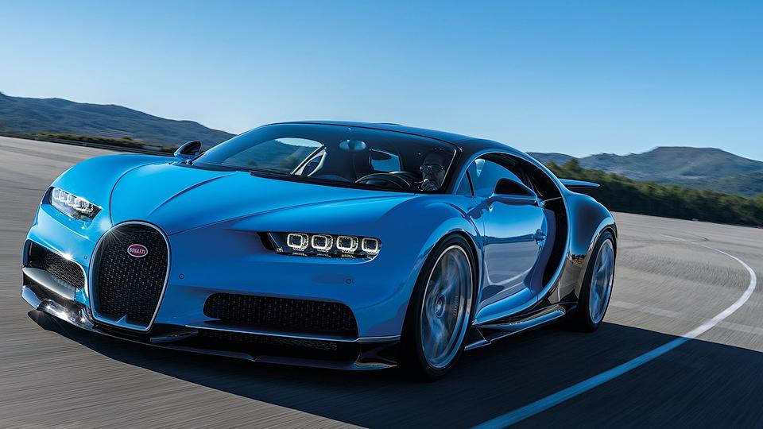
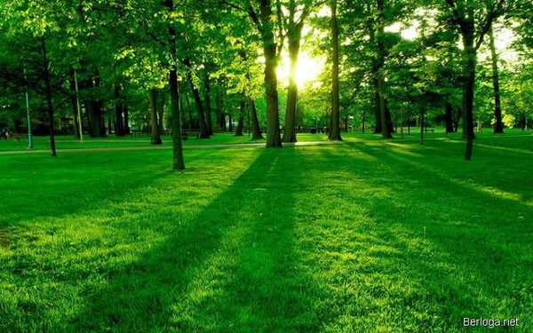

Психология цвета в маркетинге
Цвет в рекламе или корпоративном стиле бренда влияет на эмоции, принятие решений, отношение потребителя к бренду и его
продукции в целом. Все эти вещи происходят на подсознательном уровне.
Задача маркетолога и дизайнера в том, чтобы
подобрать цвет, который будет ассоциироваться с вашей деятельностью и повышать конверсию, а не наоборот.
Согласно международным исследованиям, в 85% случаев на принятие решения о покупке влияет цвет.
Люди обращают внимание на
цветную рекламу на 26% чаще, чем на черно-белую. В доказательство того, что цвет – это мощное оружие маркетинга.
Красный
У красного цвета доминирующие свойства. В рекламе его часто используют для привлечения внимания к скидкам и акциям, которые ограничены по времени.
Этот цвет можно увидеть в рекламе нижнего белья, автомобилей, продуктов питания. Подходит для кнопок, указателей.
+ цвет силы, страсти, любви, восхищения, бесстрашия, желания, скорости. Может указывать на энергичность и импульсивность.
– цвет опасности, срочности, может вызывать злость.

Особенности красного цвета в рекламе:
- возбуждает аппетит, поэтому часто используется фастфудами;
- вызывает эффект срочности;
- ассоциируется с распродажами;
- учащает пульс.
Черный
С помощью черного цвета удается добиться ощущения загадочности и изысканности. Его давно взяли на вооружение элитные бренды.
Подходит для кнопок и текста на белом фоне, с его помощью хорошо получается делать акцент. Черный можно увидеть в рекламе автомобилей, часов, продукции Apple, гаджетов.
+ цвет роскоши, власти, изысканности, минимализма, строгости, элегантности, защиты, стабильности, утонченности. Часто используется, чтобы подчеркнуть официальный, деловой стиль.
– цвет тоски, смерти.
Особенности черного цвета в рекламе:
- смотрится роскошно и влиятельно;
- побуждает к совершению покупки;
- хорошо использовать в качестве фона.
Белый
Белый фон помогает акцентировать внимание на важных деталях, поэтому его часто используют в лендингах. Категорически не подходит для оформления кнопок с призывами, так как не вызывает ощущение важности.
Белый можно увидеть в рекламе фармацевтических препаратов, эко проектов, товаров для здоровья, одежды, интерьеров.
+ цвет чистоты, свежести, простоты, непорочности, здоровья, минимализма;
– цвет безразличия, примитивности, изоляции.
Особенности белого цвета в рекламе:
- часто используется, как доминирующий;
- подходит для фона в лендингах и на многостраничных сайтах;
- помогает выделить важные элементы.
Cиний
Синий цвет часто используют компании, продукцию, которых нельзя пощупать, но при этом она должна вызывать доверие – это онлайн сервисы, платежные системы, банки.
Синий цвет также можно встретить в рекламе воды, косметики, зубной пасты, сервисов, товаров для здоровья, туроператоров.
+ цвет безопасности, спокойствия, доверия, свежести, логичности, консервативности;
– в негативном ключе может восприниматься, как цвет замкнутости, непривлекательности.
Особенности синего цвета в рекламе:
- обладает успокаивающим эффектом;
- предпочтителен для мужчин;
- не стоит использовать в пищевой промышленности.
Зеленый
Зеленый цвет используется в рекламе всего, что связано с природой, эко продуктами, проектов, связанных с экологией.
Его также часто применяют для оформления CTA-кнопок. Можно встретить в рекламе пищевых продуктов, чая, бытовой химии, технологий, косметики, фармацевтических продуктов.
+ цвет экологии, природы, здоровья, чистоты, молодости, спокойствия, денег, открытости, дружелюбия;
– может ассоциироваться с завистью, жадностью, чувством вины.
Особенности зеленго цвета в рекламе:
- ассоциируется с развитием, ростом, здоровьем и деньгами;
- привлекает внимание и работает, как призыв к действию;
- расслабляет глаза.